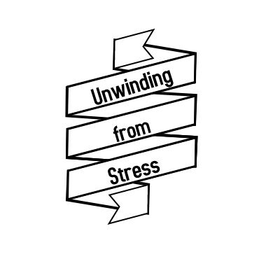

Organization Operation Information:
Location: 1111 50th St. University, Houston,Texas 503222
Directions
Operation Hours: Monday ‐ Friday @12pm ‐ 7:30pm
Newspaper
16 September 2021
On this week’s edition of “Unwind from Stress,” we are taking a look at harmful ways to destress. Our organization focuses on positive ways to deal with stress. Not everyone has the resources and access to some of the coping mechanisms that we talk about.
These are some simple, free and easy ways to clear your mind. One of the most beneficial activities for physical and mental health is walking. Walking at least thirty minutes a day increases the health of your lungs and heart, reduces the risk of a stroke and heart attack, and releases endorphins which is responsible for improving your mood and stimulates relaxation. During your walk, you can listen to music and plan ahead for your day and/or week. There are no restrictions on what you can do.
Yoga is another great way to relax your mind and body. Focus your mind on keeping your balance and breathing. Yoga has the same benefits as walking. You can do yoga indoors or outdoors. The pace of yoga is much slower and it focuses on breathing and posture.